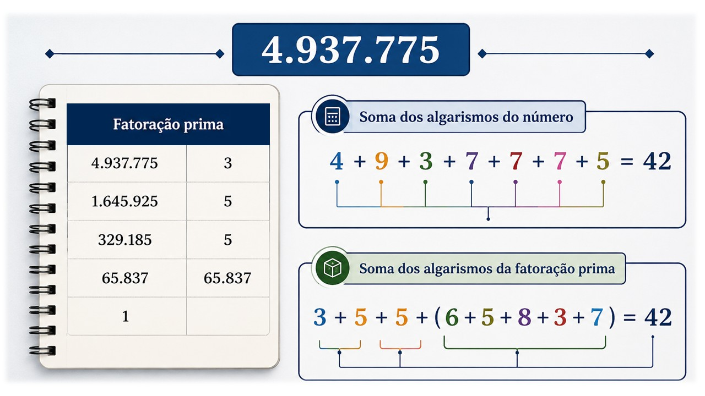

Números de Smith
Explorando relações e padrões numéricos
Este caderno interativo foi desenvolvido como produto educacional da dissertação de mestrado do Programa de Mestrado Profissional em Matemática em Rede Nacional (PROFMAT), da Universidade Tecnológica Federal do Paraná (UTFPR), elaborada por Moniky Oliveira, sob a orientação do Prof. Dr. Ronie Peterson Dario.
Seu objetivo é proporcionar uma investigação dinâmica sobre os números de Smith, combinando aspectos históricos, conceitos matemáticos, exemplos resolvidos, atividades interativas e desafios que incentivam a exploração de relações e padrões numéricos.
Ao longo deste material, você será convidado a formular conjecturas, testar ideias, analisar exemplos e construir seu conhecimento por meio da experimentação e da resolução de problemas. Espera-se que este caderno contribua para tornar o estudo da Teoria dos Números mais acessível, investigativo e significativo, despertando o interesse pela descoberta de novas propriedades matemáticas.
Bom estudo!
Investigação Inicial
Observe o número 666 e sua fatoração em números primos.
| Número | Fatoração |
|---|---|
| 666 | 2 × 3 × 3 × 37 |
O que você percebe?
Existe alguma relação entre os algarismos do número e dos fatores primos?
História dos Números de Smith
Na Matemática, muitas descobertas começaram justamente com uma simples observação do cotidiano. Um exemplo disso ocorreu em 1982, quando o matemático canadense-americano Albert Wilansky observou o número de telefone de seu cunhado, Harold Smith: 493-7775. Ele notou que, ao fatorar esse número, a soma dos algarismos do número era igual à soma dos algarismos de seus fatores primos.

Wilansky cunhou o termo "Número de Smith" em homenagem a Harold Smith. Essa observação deu origem ao estudo dessa classe especial de números.
Vídeo
Assista ao vídeo para conhecer a história dos Números de Smith e compreender como essa curiosa propriedade foi descoberta.
Exercícios Básicos
Complete as etapas abaixo para investigar se o número apresentado é um número de Smith. Preencha a fatoração prima, calcule as somas dos algarismos e, ao final, registre sua conclusão.
Número 378
Soma dos algarismos dos fatores
Soma dos algarismos do número
378 é um número de Smith?
Número 198
198 =
Soma dos algarismos dos fatores
Soma dos algarismos do número
198 é um número de Smith?
Número 250
250 =
Soma dos algarismos dos fatores
Soma dos algarismos do número
250 é um número de Smith?
Número 85
85 =
Soma dos algarismos dos fatores
Soma dos algarismos do número
85 é um número de Smith?
Conceitos Fundamentais
DEFINIÇÃO: Um número de Smith é um número composto n tal que a soma dos seus algarismos na base decimal é igual à soma dos algarismos de todos os seus fatores primos, contados com multiplicidade.
Vamos denotar como s(m) a soma dos algarismos do número m e sp(m) a soma dos algarismos de todos os fatores primos de m. Por exemplo,
58 = 2 × 29
s(58) = 13 = 2 + (2 + 9) = sp(58).
Portanto, 58 é um número de Smith.
Diversos acadêmicos estudaram os números de Smith e encontraram algumas propriedades interessantes que servem de base para descoberta de novos números de Smith. Cito aqui duas de grande relevância.
- Para qualquer número inteiro positivo m tem-se s(m) ≡ m (mod 9).
- Sejam m e n números inteiros positivos, então sp(mn) = sp(m) + sp(n).
Ainda não há uma generalização dos números de Smith, ou seja, uma fórmula que nos permita encontrar qualquer um deles. Entretanto, desde o artigo de Wilansky várias proposições surgiram para encontrar números de Smith, como:
- Seja p um número primo, com p > 5 e s(p) = 5. Então 21p e 112p são números de Smith.
- Seja n um número inteiro positivo tal que s(n) > sp(n) e s(n) ≡ sp(n) (mod 7). Então 10kn é um número de Smith, onde k = (s(n) − sp(n))/7.
- Seja p um número primo composto dos algarismos 0, 1, 2, 3 e s(p) = 13. Então 11.001p é um número de Smith.
- Seja p um número primo composto dos algarismos 0, 1, 2, 3 e s(p) = 11. Então 101.001p é um número de Smith.
- Seja p um número primo maior que 101 contendo apenas os algarismos 0, 1, 2, 3, 4 e s(p) = 7n + 2, com n ≥ 1. Então 10n × 11p e 10n × 101p são números de Smith.
- Seja Rm um número primo. Então 3.304Rm, com m ≥ 3, é um número de Smith.
- Seja q um primo cujos algarismos são apenas 0 ou 1. Então existe um múltiplo de q que é um número de Smith.
- Seja n um número primo. Então 2n é um número de Smith se, e somente se, s(2n) − s(n) = 2.
Quando Wilansky publicou o primeiro artigo sobre o tema, levantou o questionamento sobre a infinitude desse conjunto. Poucos anos depois, McDaniel conseguiu resultados que responderam positivamente a essa questão.
Exercícios Interativos
Compartilhe sua ideia
Ao longo deste material, você explorou padrões, analisou exemplos e compreendeu propriedades desses números especiais. Talvez, durante esse processo, você tenha encontrado uma nova regularidade, elaborado uma demonstração diferente, identificado uma generalização ou levantado uma questão que ainda merece investigação.
Se desejar contribuir com o desenvolvimento deste tema, compartilhe suas ideias. Serão muito bem-vindas novas conjecturas, demonstrações, generalizações, exemplos interessantes ou sugestões.
Envie sua contribuição para:
monikyno@gmail.comA Matemática é construída coletivamente. Cada nova observação tem o potencial de ampliar nossa compreensão e inspirar futuras investigações.
Materiais Complementares
Os materiais apresentados nesta seção permitem aprofundar o estudo dos números de Smith sob diferentes perspectivas. Foram selecionados recursos que abordam aspectos históricos, propriedades matemáticas, algoritmos e aplicações relacionadas a essa classe especial de números.
Artigos científicos
Smith Numbers
Albert Wilansky (1982)
SMITH NUMBERS FROM PRIMES WITH SMALL DIGITS
Patrick Costello
Construction of Smith Numbers
Sham Oltikar and Keith Wayland
Livro
Exploring the Beauty of Fascinating Numbers
Shyam Sunder Gupta